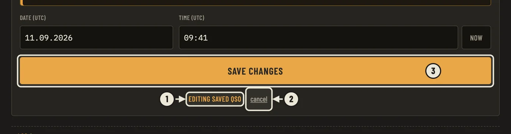

Как исправить записанную связь
R2FEL HamLog 1.0.66 · Windows · если позывной (или имя, время) записан неверно
Способ 1. Исправить позывной, время, диапазон — любое поле
- Внизу окна найдите список записанных связей (журнал). Если его не видно — нажмите кнопку ▸ LOG слева внизу.
- Щёлкните один раз мышью по нужной строке (в любом месте строки, только не по красному крестику справа). Подождите долю секунды — связь «поднимется» вверх, в форму. Над кнопкой появится оранжевая надпись EDITING SAVED QSO — значит, вы правите уже записанную связь, а не вводите новую.
- В верхней части формы в поле CALLSIGN стоит позывной корреспондента. Сотрите неверный и впишите правильный (нажмите в поле, выделите всё — Ctrl+A, и печатайте). Так же можно поменять дату, время, частоту, рапорты.
- Нажмите большую оранжевую кнопку SAVE CHANGES (или клавишу Enter). Готово: строка в журнале обновилась.
- Передумали — нажмите cancel под кнопкой. Всё останется как было.

1 — надпись «правите записанную связь» · 2 — cancel, отменить · 3 — SAVE CHANGES, сохранить
Осторожно! Красный крестик ✕ справа в строке журнала удаляет связь (программа спросит подтверждение — тогда нажмите «нет»). Чтобы исправить, нажимайте на саму строку, а не на крестик. Также не нажимайте кнопку NOW рядом со временем: она ставит текущее время, а не исправляет старое.
Способ 2. Быстро исправить только имя или город
- Найдите связь (в журнале или в карточке найденного корреспондента).
- Нажмите два раза подряд (двойной щелчок) на имени или на городе.
- Текст можно править прямо на месте. Исправили — нажмите Enter (или просто щёлкните в сторону). Отменить правку — Esc.
Если вы ошиблись в позывной сразу при вводе, ещё не записав связь: в поле CALLSIGN нажмите серый крестик ✕ в конце поля (или Esc) — поле очистится — и введите заново.
Если что-то пошло не так
- Строка не открылась для правки — щёлкните ещё раз, один раз и спокойно. Двойной щелчок по строке выделяет слово, а не открывает связь.
- Неверно исправили и уже сохранили — просто откройте связь снова и поправьте ещё раз.
- Если связь уже отправляли в LoTW, eQSL или HAMLOG и вы поменяли позывной, дату, время, диапазон или вид — программа сочтёт её новой и поставит в очередь на отправку заново. Это нормально.
Вопросы — r2fel@mail.ru · 73!